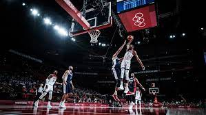
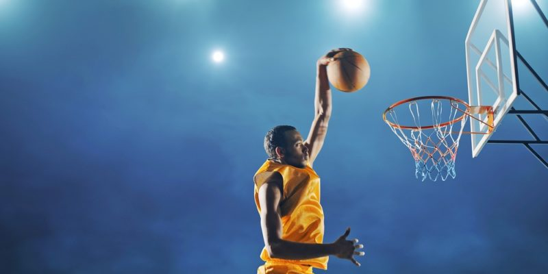

BASQUETBALL

El baloncesto2 (del inglés basketball; de basket, 'canasta', y ball, 'pelota'), también conocido como básquetbol, basquetbol o simplemente básquet,n. 1 es un deporte de equipo, jugado entre dos conjuntos de cinco jugadores cada uno durante cuatro períodos o cuartos de diez minutos cada uno4 ―doce minutos cada cuarto en la NBA―. El objetivo del equipo es anotar puntos introduciendo un balón por la canasta, un aro a 3,05 metros sobre la superficie de la pista de juego del que cuelga una red. La puntuación por cada canasta o cesta es de dos o tres puntos, dependiendo de la posición desde la que se efectúa el tiro a canasta, o de uno, si se trata de un tiro libre por una falta de un jugador contrario. El equipo ganador es el que obtiene el mayor número de puntos.
El contacto con las manos junto a la pelota debe de ser continua y de forma consecutiva. Los jugadores, también llamados basquetbolistas o baloncestistas, no pueden trasladarse de un lado a otro sujetando la pelota, sino botándola contra el suelo. El equipo en posesión del balón o atacante, intenta anotar puntos mediante tiros, entradas a canasta o mates, mientras que el equipo defensor busca impedirlo robando la pelota o efectuando tapones. Cuando un tiro hacia la canasta fracasa, los jugadores de ambos equipos intentan atrapar el rebote.
James Naismith, un profesor canadiense de educación física, inventó el básquetbol en 1891 en la YMCA de Springfield, Massachusetts, Estados Unidos. El deporte ganó rápidamente popularidad y se expandió por las universidades y colegios norteamericanos a principios del siglo xx.

La Federación Internacional de Baloncesto (FIBA) surgió en 1932 y el deporte debutó en los Juegos Olímpicos de verano en 1936. En 1946 se fundó la principal liga profesional de los Estados Unidos, la National Basketball Association (NBA), donde se formaron grandes jugadores que contribuyeron a la creciente popularidad del baloncesto: Wilt Chamberlain y Bill Russell en los años 1960 y, posteriormente, Kareem Abdul-Jabbar, Moses Malone, Larry Bird, Magic Johnson, Kobe Bryant, Stephen Curry, Michael Jordan y LeBron James, estos dos últimos considerados por muchos como los dos mejores jugadores de la historia.5
El baloncesto es uno de los deportes más practicados del mundo, con más de 450 millones de jugadores en 2013. Se juegan numerosas ligas y campeonatos en el mundo entero, sobre todo en Europa y más recientemente en Asia, donde el deporte ha despuntado en el siglo xxi. Las mujeres representan una buena parte de los practicantes, a pesar de una exposición menor en los medios del baloncesto femenino. Se han desarrollado algunas variantes, como el baloncesto en silla de ruedas para deportistas discapacitados, el streetball y el baloncesto 3x3. Existe una cultura específica surgida a partir del deporte que se expresa en la música, la literatura, el cine y los videojuegos.

En diciembre de 1891, James Naismith , un profesor canadiense de educación física e instructor en la Escuela de Capacitación de la Asociación Cristiana de Hombres Jóvenes Internacionales (ahora Springfield College ) en Springfield, Massachusetts , [5] estaba tratando de mantener activa su clase de gimnasia en un día lluvioso. [6] Buscó un juego de interior vigoroso para mantener a sus estudiantes ocupados y en niveles adecuados de condición física durante los largos inviernos de Nueva Inglaterra . Después de rechazar otras ideas por considerarlas demasiado toscas o inadecuadas para los gimnasios amurallados, inventó un nuevo juego en el que los jugadores pasaban una pelota a sus compañeros de equipo y trataban de sumar puntos arrojando la pelota a una canasta montada en una pared. Naismith escribió las reglas básicas y clavó una canasta de duraznos en una vía elevada. Naismith inicialmente instaló la canasta de melocotón con el fondo intacto, lo que significaba que la pelota tenía que recuperarse manualmente después de cada "canasta" o punto anotado. Esto rápidamente resultó tedioso, por lo que Naismith quitó la parte inferior de la canasta para permitir que las bolas se sacaran con una espiga larga después de cada canasta anotada. La primera cancha de baloncesto: Springfield College
Baloncesto antiguo con cordones
El baloncesto se jugaba originalmente con una pelota de fútbol . Estos balones redondos de " fútbol de asociación " se fabricaron, en ese momento, con un juego de cordones para cerrar el orificio necesario para insertar la vejiga inflable después de que los otros segmentos cosidos de la cubierta del balón se hubieran volteado de afuera hacia adentro. [7] [8] Estos cordones pueden hacer que los pases de rebote y los regates sean impredecibles. [9] Eventualmente, se inventó un método de construcción de bolas sin cordones, y Naismith apoyó este cambio en el juego. (Mientras que en el fútbol americano(, la construcción de encaje demostró ser ventajosa para el agarre y permanece hasta el día de hoy.) Las primeras pelotas hechas específicamente para baloncesto eran marrones, y fue solo a fines de la década de 1950 que Tony Hinkle , en busca de una pelota que fuera más visible para los jugadores . y espectadores por igual, presentó la pelota naranja que ahora es de uso común. Driblar no era parte del juego original excepto por el "pase de rebote" a los compañeros de equipo. Pasar la pelota era el principal medio de movimiento de la pelota. Finalmente se introdujo el regate, pero limitado por la forma asimétrica de los primeros balones. [ dudoso - discutir ] El regate era común en 1896, con una regla contra el doble regate en 1898. [10]
La primera cancha de baloncesto: Springfield College
Baloncesto antiguo con cordones
El baloncesto se jugaba originalmente con una pelota de fútbol . Estos balones redondos de " fútbol de asociación " se fabricaron, en ese momento, con un juego de cordones para cerrar el orificio necesario para insertar la vejiga inflable después de que los otros segmentos cosidos de la cubierta del balón se hubieran volteado de afuera hacia adentro. [7] [8] Estos cordones pueden hacer que los pases de rebote y los regates sean impredecibles. [9] Eventualmente, se inventó un método de construcción de bolas sin cordones, y Naismith apoyó este cambio en el juego. (Mientras que en el fútbol americano(, la construcción de encaje demostró ser ventajosa para el agarre y permanece hasta el día de hoy.) Las primeras pelotas hechas específicamente para baloncesto eran marrones, y fue solo a fines de la década de 1950 que Tony Hinkle , en busca de una pelota que fuera más visible para los jugadores . y espectadores por igual, presentó la pelota naranja que ahora es de uso común. Driblar no era parte del juego original excepto por el "pase de rebote" a los compañeros de equipo. Pasar la pelota era el principal medio de movimiento de la pelota. Finalmente se introdujo el regate, pero limitado por la forma asimétrica de los primeros balones. [ dudoso - discutir ] El regate era común en 1896, con una regla contra el doble regate en 1898. [10]